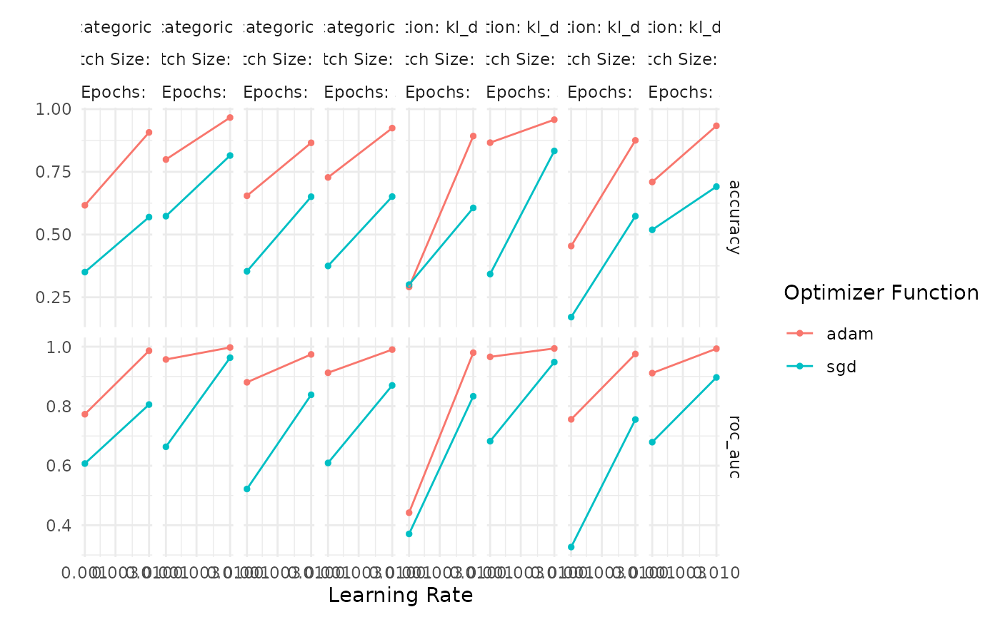

Tuning Fit and Compile Arguments
tuning_fit_compile_args.RmdIntroduction
While kerasnip makes it easy to tune the architecture of
a Keras model (e.g., the number of layers or the number of units in a
layer), it is often just as important to tune the parameters that
control the training process itself. kerasnip exposes these
parameters through special fit_* and compile_*
arguments in the model specification.
This vignette provides a comprehensive example of how to tune these
arguments within a tidymodels workflow. We will tune:
-
fit_epochs: The number of training epochs. -
fit_batch_size: The number of samples per gradient update. -
compile_optimizer: The optimization algorithm (e.g., “adam”, “sgd”). -
compile_loss: The loss function used for training. -
learn_rate: The learning rate for the optimizer.
Setup
First, we load the necessary packages.
library(kerasnip)
library(tidymodels)
#> ── Attaching packages ────────────────────────────────────── tidymodels 1.4.1 ──
#> ✔ broom 1.0.9 ✔ recipes 1.3.1
#> ✔ dials 1.4.2 ✔ rsample 1.3.1
#> ✔ dplyr 1.1.4 ✔ tailor 0.1.0
#> ✔ ggplot2 4.0.0 ✔ tidyr 1.3.1
#> ✔ infer 1.0.9 ✔ tune 2.0.0
#> ✔ modeldata 1.5.1 ✔ workflows 1.3.0
#> ✔ parsnip 1.3.3 ✔ workflowsets 1.1.1
#> ✔ purrr 1.1.0 ✔ yardstick 1.3.2
#> ── Conflicts ───────────────────────────────────────── tidymodels_conflicts() ──
#> ✖ purrr::discard() masks scales::discard()
#> ✖ dplyr::filter() masks stats::filter()
#> ✖ dplyr::lag() masks stats::lag()
#> ✖ recipes::step() masks stats::step()
library(keras3)
#>
#> Attaching package: 'keras3'
#> The following object is masked from 'package:yardstick':
#>
#> get_weightsData Preparation
We will use the classic iris dataset for this example.
It’s a simple, small dataset, which is ideal for demonstrating the
tuning process without long training times.
# Split data into training and testing sets
set.seed(123)
iris_split <- initial_split(iris, prop = 0.8, strata = Species)
iris_train <- training(iris_split)
iris_test <- testing(iris_split)
# Create cross-validation folds for tuning
iris_folds <- vfold_cv(iris_train, v = 3, strata = Species)Define a kerasnip Model
We’ll create a very simple sequential model with a single dense
layer. This keeps the focus on tuning the fit_* and
compile_* arguments rather than the model architecture.
# Define layer blocks
input_block <- function(model, input_shape) {
keras_model_sequential(input_shape = input_shape)
}
dense_block <- function(model, units = 10) {
model |> layer_dense(units = units, activation = "relu")
}
output_block <- function(model, num_classes) {
model |> layer_dense(units = num_classes, activation = "softmax")
}
# Create the kerasnip model specification function
create_keras_sequential_spec(
model_name = "iris_mlp",
layer_blocks = list(
input = input_block,
dense = dense_block,
output = output_block
),
mode = "classification"
)Define the Tunable Specification
Now, we create an instance of our iris_mlp model. We set
the arguments we want to optimize to tune().
# Define the tunable model specification
tune_spec <- iris_mlp(
dense_units = 16, # Keep architecture fixed for this example
fit_epochs = tune(),
fit_batch_size = tune(),
compile_optimizer = tune(),
compile_loss = tune(),
learn_rate = tune()
) |>
set_engine("keras")
print(tune_spec)
#> iris mlp Model Specification (classification)
#>
#> Main Arguments:
#> num_input = structure(list(), class = "rlang_zap")
#> num_dense = structure(list(), class = "rlang_zap")
#> num_output = structure(list(), class = "rlang_zap")
#> dense_units = 16
#> learn_rate = tune()
#> fit_batch_size = tune()
#> fit_epochs = tune()
#> fit_callbacks = structure(list(), class = "rlang_zap")
#> fit_validation_split = structure(list(), class = "rlang_zap")
#> fit_validation_data = structure(list(), class = "rlang_zap")
#> fit_shuffle = structure(list(), class = "rlang_zap")
#> fit_class_weight = structure(list(), class = "rlang_zap")
#> fit_sample_weight = structure(list(), class = "rlang_zap")
#> fit_initial_epoch = structure(list(), class = "rlang_zap")
#> fit_steps_per_epoch = structure(list(), class = "rlang_zap")
#> fit_validation_steps = structure(list(), class = "rlang_zap")
#> fit_validation_batch_size = structure(list(), class = "rlang_zap")
#> fit_validation_freq = structure(list(), class = "rlang_zap")
#> fit_verbose = structure(list(), class = "rlang_zap")
#> fit_view_metrics = structure(list(), class = "rlang_zap")
#> compile_optimizer = tune()
#> compile_loss = tune()
#> compile_metrics = structure(list(), class = "rlang_zap")
#> compile_loss_weights = structure(list(), class = "rlang_zap")
#> compile_weighted_metrics = structure(list(), class = "rlang_zap")
#> compile_run_eagerly = structure(list(), class = "rlang_zap")
#> compile_steps_per_execution = structure(list(), class = "rlang_zap")
#> compile_jit_compile = structure(list(), class = "rlang_zap")
#> compile_auto_scale_loss = structure(list(), class = "rlang_zap")
#>
#> Computational engine: kerasCreate Workflow and Tuning Grid
Next, we create a workflow and define the search space
for our hyperparameters using dials. kerasnip
provides special dials parameter functions for
optimizer and loss.
# Create a simple recipe
iris_recipe <- recipe(Species ~ ., data = iris_train) |>
step_normalize(all_numeric_predictors())
# Create the workflow
tune_wf <- workflow() |>
add_recipe(iris_recipe) |>
add_model(tune_spec)
# Define the tuning grid
params <- extract_parameter_set_dials(tune_wf) |>
update(
fit_epochs = epochs(c(10, 30)),
fit_batch_size = batch_size(c(16, 64), trans = NULL),
compile_optimizer = optimizer_function(values = c("adam", "sgd", "rmsprop")),
compile_loss = loss_function_keras(values = c("categorical_crossentropy", "kl_divergence")),
learn_rate = learn_rate(c(0.001, 0.01), trans = NULL)
)
set.seed(456)
tuning_grid <- grid_regular(params, levels = 2)
tuning_grid
#> # A tibble: 32 × 5
#> learn_rate fit_batch_size fit_epochs compile_optimizer compile_loss
#> <dbl> <int> <int> <chr> <chr>
#> 1 0.001 16 10 adam categorical_crossentr…
#> 2 0.01 16 10 adam categorical_crossentr…
#> 3 0.001 64 10 adam categorical_crossentr…
#> 4 0.01 64 10 adam categorical_crossentr…
#> 5 0.001 16 30 adam categorical_crossentr…
#> 6 0.01 16 30 adam categorical_crossentr…
#> 7 0.001 64 30 adam categorical_crossentr…
#> 8 0.01 64 30 adam categorical_crossentr…
#> 9 0.001 16 10 sgd categorical_crossentr…
#> 10 0.01 16 10 sgd categorical_crossentr…
#> # ℹ 22 more rowsTune the Model
With the workflow and grid defined, we can now run the hyperparameter
tuning using tune_grid().
tune_res <- tune_grid(
tune_wf,
resamples = iris_folds,
grid = tuning_grid,
metrics = metric_set(accuracy, roc_auc),
control = control_grid(save_pred = FALSE, save_workflow = TRUE, verbose = FALSE)
)
#> 2/2 - 0s - 23ms/step
#> 2/2 - 0s - 11ms/step
#> 2/2 - 0s - 23ms/step
#> 2/2 - 0s - 11ms/step
#> 2/2 - 0s - 24ms/step
#> 2/2 - 0s - 11ms/step
#> 2/2 - 0s - 23ms/step
#> 2/2 - 0s - 11ms/step
#> 2/2 - 0s - 23ms/step
#> 2/2 - 0s - 11ms/step
#> 2/2 - 0s - 23ms/step
#> 2/2 - 0s - 11ms/step
#> 2/2 - 0s - 23ms/step
#> 2/2 - 0s - 11ms/step
#> 2/2 - 0s - 23ms/step
#> 2/2 - 0s - 10ms/step
#> 2/2 - 0s - 23ms/step
#> 2/2 - 0s - 11ms/step
#> 2/2 - 0s - 23ms/step
#> 2/2 - 0s - 11ms/step
#> 2/2 - 0s - 23ms/step
#> 2/2 - 0s - 11ms/step
#> 2/2 - 0s - 23ms/step
#> 2/2 - 0s - 11ms/step
#> 2/2 - 0s - 23ms/step
#> 2/2 - 0s - 11ms/step
#> 2/2 - 0s - 23ms/step
#> 2/2 - 0s - 11ms/step
#> 2/2 - 0s - 24ms/step
#> 2/2 - 0s - 11ms/step
#> 2/2 - 0s - 24ms/step
#> 2/2 - 0s - 11ms/step
#> 2/2 - 0s - 23ms/step
#> 2/2 - 0s - 11ms/step
#> 2/2 - 0s - 23ms/step
#> 2/2 - 0s - 11ms/step
#> 2/2 - 0s - 23ms/step
#> 2/2 - 0s - 11ms/step
#> 2/2 - 0s - 24ms/step
#> 2/2 - 0s - 11ms/step
#> 2/2 - 0s - 23ms/step
#> 2/2 - 0s - 11ms/step
#> 2/2 - 0s - 23ms/step
#> 2/2 - 0s - 11ms/step
#> 2/2 - 0s - 24ms/step
#> 2/2 - 0s - 11ms/step
#> 2/2 - 0s - 23ms/step
#> 2/2 - 0s - 10ms/step
#> 2/2 - 0s - 23ms/step
#> 2/2 - 0s - 11ms/step
#> 2/2 - 0s - 23ms/step
#> 2/2 - 0s - 11ms/step
#> 2/2 - 0s - 24ms/step
#> 2/2 - 0s - 11ms/step
#> 2/2 - 0s - 23ms/step
#> 2/2 - 0s - 11ms/step
#> 2/2 - 0s - 23ms/step
#> 2/2 - 0s - 11ms/step
#> 2/2 - 0s - 23ms/step
#> 2/2 - 0s - 11ms/step
#> 2/2 - 0s - 23ms/step
#> 2/2 - 0s - 11ms/step
#> 2/2 - 0s - 23ms/step
#> 2/2 - 0s - 11ms/step
#> 2/2 - 0s - 24ms/step
#> 2/2 - 0s - 11ms/step
#> 2/2 - 0s - 23ms/step
#> 2/2 - 0s - 11ms/step
#> 2/2 - 0s - 23ms/step
#> 2/2 - 0s - 11ms/step
#> 2/2 - 0s - 23ms/step
#> 2/2 - 0s - 11ms/step
#> 2/2 - 0s - 24ms/step
#> 2/2 - 0s - 11ms/step
#> 2/2 - 0s - 23ms/step
#> 2/2 - 0s - 11ms/step
#> 2/2 - 0s - 23ms/step
#> 2/2 - 0s - 11ms/step
#> 2/2 - 0s - 23ms/step
#> 2/2 - 0s - 11ms/step
#> 2/2 - 0s - 23ms/step
#> 2/2 - 0s - 11ms/step
#> 2/2 - 0s - 23ms/step
#> 2/2 - 0s - 11ms/step
#> 2/2 - 0s - 23ms/step
#> 2/2 - 0s - 11ms/step
#> 2/2 - 0s - 23ms/step
#> 2/2 - 0s - 11ms/step
#> 2/2 - 0s - 23ms/step
#> 2/2 - 0s - 11ms/step
#> 2/2 - 0s - 23ms/step
#> 2/2 - 0s - 11ms/step
#> 2/2 - 0s - 24ms/step
#> 2/2 - 0s - 11ms/step
#> 2/2 - 0s - 23ms/step
#> 2/2 - 0s - 11ms/step
#> 2/2 - 0s - 23ms/step
#> 2/2 - 0s - 11ms/step
#> 2/2 - 0s - 23ms/step
#> 2/2 - 0s - 11ms/step
#> 2/2 - 0s - 23ms/step
#> 2/2 - 0s - 11ms/step
#> 2/2 - 0s - 24ms/step
#> 2/2 - 0s - 11ms/step
#> 2/2 - 0s - 24ms/step
#> 2/2 - 0s - 11ms/step
#> 2/2 - 0s - 23ms/step
#> 2/2 - 0s - 11ms/step
#> 2/2 - 0s - 23ms/step
#> 2/2 - 0s - 11ms/step
#> 2/2 - 0s - 23ms/step
#> 2/2 - 0s - 11ms/step
#> 2/2 - 0s - 23ms/step
#> 2/2 - 0s - 11ms/step
#> 2/2 - 0s - 24ms/step
#> 2/2 - 0s - 11ms/step
#> 2/2 - 0s - 23ms/step
#> 2/2 - 0s - 11ms/step
#> 2/2 - 0s - 23ms/step
#> 2/2 - 0s - 11ms/step
#> 2/2 - 0s - 23ms/step
#> 2/2 - 0s - 11ms/step
#> 2/2 - 0s - 23ms/step
#> 2/2 - 0s - 11ms/step
#> 2/2 - 0s - 23ms/step
#> 2/2 - 0s - 11ms/step
#> 2/2 - 0s - 23ms/step
#> 2/2 - 0s - 11ms/step
#> 2/2 - 0s - 23ms/step
#> 2/2 - 0s - 11ms/step
#> 2/2 - 0s - 23ms/step
#> 2/2 - 0s - 10ms/step
#> 2/2 - 0s - 23ms/step
#> 2/2 - 0s - 11ms/step
#> 2/2 - 0s - 23ms/step
#> 2/2 - 0s - 11ms/step
#> 2/2 - 0s - 23ms/step
#> 2/2 - 0s - 11ms/step
#> 2/2 - 0s - 23ms/step
#> 2/2 - 0s - 11ms/step
#> 2/2 - 0s - 24ms/step
#> 2/2 - 0s - 11ms/step
#> 2/2 - 0s - 24ms/step
#> 2/2 - 0s - 11ms/step
#> 2/2 - 0s - 24ms/step
#> 2/2 - 0s - 11ms/step
#> 2/2 - 0s - 24ms/step
#> 2/2 - 0s - 11ms/step
#> 2/2 - 0s - 24ms/step
#> 2/2 - 0s - 11ms/step
#> 2/2 - 0s - 24ms/step
#> 2/2 - 0s - 11ms/step
#> 2/2 - 0s - 23ms/step
#> 2/2 - 0s - 11ms/step
#> 2/2 - 0s - 24ms/step
#> 2/2 - 0s - 11ms/step
#> 2/2 - 0s - 24ms/step
#> 2/2 - 0s - 11ms/step
#> 2/2 - 0s - 24ms/step
#> 2/2 - 0s - 11ms/step
#> 2/2 - 0s - 23ms/step
#> 2/2 - 0s - 11ms/step
#> 2/2 - 0s - 23ms/step
#> 2/2 - 0s - 11ms/step
#> 2/2 - 0s - 25ms/step
#> 2/2 - 0s - 11ms/step
#> 2/2 - 0s - 23ms/step
#> 2/2 - 0s - 11ms/step
#> 2/2 - 0s - 24ms/step
#> 2/2 - 0s - 11ms/step
#> 2/2 - 0s - 23ms/step
#> 2/2 - 0s - 11ms/step
#> 2/2 - 0s - 23ms/step
#> 2/2 - 0s - 11ms/step
#> 2/2 - 0s - 23ms/step
#> 2/2 - 0s - 11ms/step
#> 2/2 - 0s - 24ms/step
#> 2/2 - 0s - 11ms/step
#> 2/2 - 0s - 23ms/step
#> 2/2 - 0s - 11ms/step
#> 2/2 - 0s - 23ms/step
#> 2/2 - 0s - 11ms/step
#> 2/2 - 0s - 23ms/step
#> 2/2 - 0s - 11ms/step
#> 2/2 - 0s - 23ms/step
#> 2/2 - 0s - 11ms/step
#> 2/2 - 0s - 23ms/step
#> 2/2 - 0s - 11ms/step
#> 2/2 - 0s - 24ms/step
#> 2/2 - 0s - 12ms/step
#> 2/2 - 0s - 24ms/step
#> 2/2 - 0s - 11ms/stepInspect the Results
Let’s examine the results to see how the different combinations of fitting and compilation parameters performed.
# Show the best performing models based on accuracy
show_best(tune_res, metric = "accuracy")
#> # A tibble: 5 × 11
#> learn_rate fit_batch_size fit_epochs compile_optimizer compile_loss .metric
#> <dbl> <int> <int> <chr> <chr> <chr>
#> 1 0.01 16 30 adam categorical_cr… accura…
#> 2 0.01 16 30 adam kl_divergence accura…
#> 3 0.01 64 30 adam categorical_cr… accura…
#> 4 0.01 64 30 adam kl_divergence accura…
#> 5 0.01 16 10 adam kl_divergence accura…
#> # ℹ 5 more variables: .estimator <chr>, mean <dbl>, n <int>, std_err <dbl>,
#> # .config <chr>
# Plot the results
autoplot(tune_res) + theme_minimal()
# Select the best hyperparameters
best_params <- select_best(tune_res, metric = "accuracy")
print(best_params)
#> # A tibble: 1 × 6
#> learn_rate fit_batch_size fit_epochs compile_optimizer compile_loss .config
#> <dbl> <int> <int> <chr> <chr> <chr>
#> 1 0.01 16 30 adam categorical_cr… pre0_m…The results show that tune has successfully explored
different optimizers, loss functions, learning rates, epochs, and batch
sizes, identifying the combination that yields the best accuracy.
Finalize and Fit
Finally, we finalize our workflow with the best-performing hyperparameters and fit the model one last time on the full training dataset.
# Finalize the workflow
final_wf <- finalize_workflow(tune_wf, best_params)
# Fit the final model
final_fit <- fit(final_wf, data = iris_train)
print(final_fit)
#> ══ Workflow [trained] ══════════════════════════════════════════════════════════
#> Preprocessor: Recipe
#> Model: iris_mlp()
#>
#> ── Preprocessor ────────────────────────────────────────────────────────────────
#> 1 Recipe Step
#>
#> • step_normalize()
#>
#> ── Model ───────────────────────────────────────────────────────────────────────
#> $fit
#> Model: "sequential_96"
#> ┏━━━━━━━━━━━━━━━━━━━━━━━━━━━━━━━━━━━┳━━━━━━━━━━━━━━━━━━━━━━━━━━┳━━━━━━━━━━━━━━━┓
#> ┃ Layer (type) ┃ Output Shape ┃ Param # ┃
#> ┡━━━━━━━━━━━━━━━━━━━━━━━━━━━━━━━━━━━╇━━━━━━━━━━━━━━━━━━━━━━━━━━╇━━━━━━━━━━━━━━━┩
#> │ dense_192 (Dense) │ (None, 16) │ 80 │
#> ├───────────────────────────────────┼──────────────────────────┼───────────────┤
#> │ dense_193 (Dense) │ (None, 3) │ 51 │
#> └───────────────────────────────────┴──────────────────────────┴───────────────┘
#> Total params: 395 (1.55 KB)
#> Trainable params: 131 (524.00 B)
#> Non-trainable params: 0 (0.00 B)
#> Optimizer params: 264 (1.04 KB)
#>
#> $history
#>
#> Final epoch (plot to see history):
#> accuracy: 0.9833
#> loss: 0.04836
#>
#> $lvl
#> [1] "setosa" "versicolor" "virginica"
#>
#> $process_x
#> function (x)
#> {
#> if (is.data.frame(x) && ncol(x) == 1 && is.list(x[[1]])) {
#> x_proc <- do.call(abind::abind, c(x[[1]], list(along = 0)))
#> }
#> else {
#> x_proc <- as.matrix(x)
#> }
#> input_shape <- if (length(dim(x_proc)) > 2)
#> dim(x_proc)[-1]
#> else ncol(x_proc)
#> list(x_proc = x_proc, input_shape = input_shape)
#> }
#> <bytecode: 0x55d2590f3178>
#> <environment: namespace:kerasnip>
#>
#> $process_y
#> function (y, is_classification = NULL, class_levels = NULL)
#> {
#> if (is.data.frame(y)) {
#> y <- y[[1]]
#> }
#> if (is.null(is_classification)) {
#> is_classification <- is.factor(y)
#> }
#> y_proc <- NULL
#>
#> ...
#> and 19 more lines.We can now use this final_fit object to make predictions
on the test set.
# Make predictions
predictions <- predict(final_fit, new_data = iris_test)
#> 1/1 - 0s - 36ms/step
# Evaluate performance
bind_cols(predictions, iris_test) |>
accuracy(truth = Species, estimate = .pred_class)
#> # A tibble: 1 × 3
#> .metric .estimator .estimate
#> <chr> <chr> <dbl>
#> 1 accuracy multiclass 0.933Conclusion
This vignette demonstrated how to tune the crucial fit_*
and compile_* arguments of a Keras model within the
tidymodels framework using kerasnip. By
exposing these as tunable parameters, kerasnip gives you
full control over the training process, allowing you to optimize not
just the model’s architecture, but also how it learns.